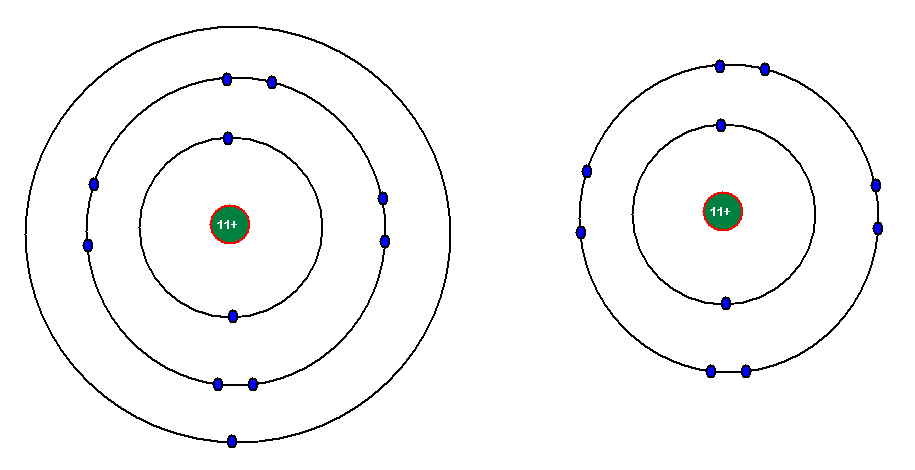
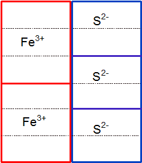
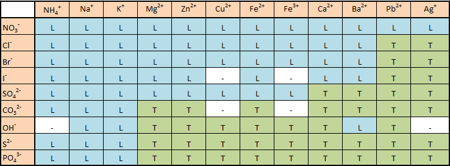
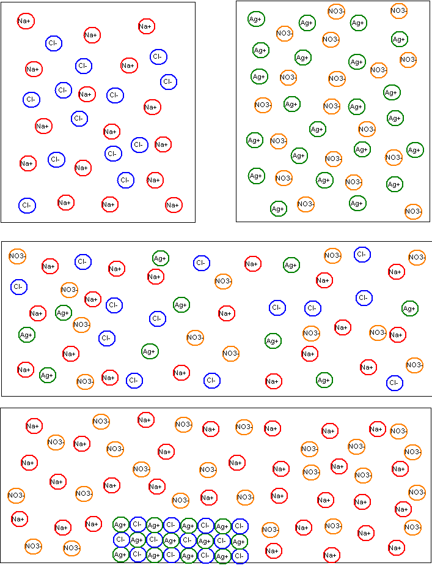

Kapitel 4: Stofs opbygning 2: Ionforbindelser
1. Formål
Formålet med dette kapitel er:
- at lære om ædelgasser og oktetreglen.
- at lære om hvad hvad ioner er og hvordan de dannes.
- at lære om ionforbindelser og iongitre.
- at lære om navngivning af ionforbindelser.
- at lære om ionforbindelsers opløsning i vand.
- at lære om fældningsreaktioner.
2. Ædelgasser og oktetreglen
Grundstofferne i 8. hovedgruppe kaldes for ædelgasserne. Det er grundstofferne helium, neon, argon, krypton, xenon og radon. Ædelgasserne har 8 elektroner i yderste skal og er kendetegnede ved (næsten) ikke at indgå i kemiske forbindelser. Der findes dog en række kemiske forbindelser hvor ædelgasserne indgår. Den meste almindelige ædelgas er argon, der udgør ca. 0,9 % af atmosfærens luft.
Der er i øvrigt en undtagelse fra reglen om, at ædelgassernes atomer har 8 elektroner i yderste skal, nemlig helium. Helium er grundstof nummer 2 og har således kun 2 elektroner. Den kan derfor i sagens natur ikke have 8 elektroner i yderste skal. Alligevel hører den sammen med de andre ædelgasser, da den har samme kemiske egenskaber - hvilket her vil sige den egenskab ikke at ville indgå i forbindelse med andre stoffer.
Ædelgassernes atomer har (med undtagelse af helium) 8 elektroner i yderste skal. Der er åbenbart noget særligt ved det at have 8 elektroner i yderste skal. Det bringer os frem til oktetreglen, der også kaldes ædelgasreglen: Atomer tilstræber at have 8 elektroner i yderste skal.
Umiddelbart er det kun atomerne fra 8. hovedgruppe der har 8 elektroner i yderste skal. Atomer fra 1. hovedgruppe har 1 elektron i yderste skal, atomer fra 2. hovedgruppe har 2 elektroner i yderste skal, osv. For at opnå 8 elektroner i yderste skal, må atomerne altså "gøre et eller andet". Det atomerne gør, er at danne kemiske forbindelser med andre atomer. Husk, at kemiske forbindelser er stoffer der er opbygget af mindst to forskellige slags atomer. Som nævnt i forrige kapitel, er der to slags kemiske forbindelser, ionforbindelser der er opbygget af metal+ikkemetal og molekylforbindelser der er opbygget af ikkemetal+ikkemetal. I dette kapitel skal vi kun se på ionforbindelser.
3. Dannelse af simple ioner
Lad os se på grundstoffet natrium, der står i 1. hovedgruppe. Natrium-atomet har 11 positive protoner i kernen (da det er grundstof nummer 11), og ligeledes 11 negative elektroner fordelt som 2 elektroner i 1. skal, 8 i 2. skal og 1 i 3. skal. Vi kan kort skrive denne elektronfordeling således: Na(2, 8, 1). Natrium opfylder klart nok ikke oktetreglen, den har jo kun 1 elektron i yderste skal og ikke 8. Hvordan kunne natrium opnå 8 elektroner i yderste skal? Vi ser at den har 8 elektroner i næstyderste skal. Hvis den nu afgiver den enlige elektron i 3. skal, så vil 2. skal nu være den yderste og i denne er der netop 8 elektroner! Natriumatomet kan altså opfylde oktetreglen ved at afgive 1 elektron. Når den nu har afgivet 1 elektron ud af 11, så har den kun 10 elektroner tilbage. Men der er stadig 11 protoner i kernen. Der er altså 1 proton mere end der er elektroner og da protoner er positive er natriumatomets ladning nu totalt positiv. Vi angiver det ved at skrive et plus øverst til højre for atomsymbolet, sådan her: Na+. Et atom der på denne måde har afgivet en elektron og derved har elektrisk ladning, kalder vi en ion.

Mere generelt kan vi definere en ion således: En ion er et atom eller en gruppe af atomer, der har afgivet eller optaget en eller flere elektroner og derfor er elektrisk ladet. Dette vil blive uddybet i det følgende.
Vi ser på magnesium (Mg) fra 2. hovedgruppe som de næste eksempel. Magnesium har følgende elektronfordeling: Mg(2, 8, 2). Den kan opnå 8 elektroner i yderste skal ved at afgive 2 elektroner. Den får dermed to positive ladninger i overskud og magnesiumionen ser dermed sådan ud: Mg2+.
Aluminium står i 3. hovedgruppe og elektronerne fordeler sig således: Al(2, 8, 3). Aluminiumatomet afgiver derfor 3 elektroner og ionen ser således ud: Al3+.
Bly står i 4. hovedgruppe og elektronerne fordeler sig således: Pb(2, 8, 18, 32, 18, 4). Blyatomet kan afgive 4 elektroner og ionen ser således ud: Pb4+. Bemærk dog at den derved får 18 elektroner i yderste skal (altså ikke 8), 18 er et andet "magisk tal". Generelt er der ikke mange atomer i 4. hovedgruppe der danner ioner, og hvis de gør, følger de ikke hovedreglen!
Lad os i stedet gå over i den modsatte side af det periodiske system. Ædelgasserne har allerede 8 elektroner i yderste skal og danner derfor slet ikke ioner.
I hovedgrupper 7 finder vi fx chlor, Cl. Denne har følgende elektronfordeling: Cl(2, 8, 7). I yderste skal har den altså 7 elektroner. Den mangler således kun 1 ekstra elektron for at opfylde oktetreglen. Derfor optager Cl 1 elektron og får dermed en samlet negativ ladning (da elektroner er negative). Ionen ser derfor sådan ud: Cl-.
Oxygen fra 6. hovedgruppe har elektronfordelingen O(2, 6). Den mangler 2 elektroner og ionen ser således ud: O2-.
Phosphor fra 5. hovedgruppe har elektronfordelingen P(2, 8, 5). Den mangler 3 elektroner og ionen ser således ud: P3-.
Vi kan sammenfatte reglerne for iondannelse i denne tabel:
| Hovedgruppe | Afgiver/optager elektroner | Ladning | Eksempel |
|---|---|---|---|
| I | Afgiver 1 | +1 | Na+ |
| II | Afgiver 2 | +2 | Mg2+ |
| III | Afgiver 3 | +3 | Al3+ |
| IV | Afgiver 4 | +4 | Pb4+ |
| V | Optager 3 | -3 | P3- |
| VI | Optager 2 | -2 | O2- |
| VII | Optager 1 | -1 | Cl- |
| VIII | Danner ikke ioner |
Bemærk, at metaller danner positive ioner og ikkemetaller danner negative ioner.
Ovenstående kan opfattes som hovedregler - fra hvilke der er undtagelser! Oktetreglen kan ikke forklare alle iondannelser. Eksempelvis kan bly danne en ion med en ladning på +2 (Pb2+) selvom bly står i 4. hovedgruppe. I undergrupperne kan vi heller ikke benytte simple regler.
I visse tilfælde kan atomer danne flere forskellig slags ioner. Fx kan jern (Fe) både danner ioner med en ladning på +2 og +3, dvs. vi får ionerne Fe2+ og Fe3+. På samme måde findes der to slags kobberioner: Cu+ og Cu2+. I navngivningen bliver man også nødt til at skelne. Det gør man ved at skrive ionens ladning i parentes efter grundstofnavnet, navnet på ionen Fe2+ skriver man som jern(2+) og man udtaler det som "jern to". Med ældre notation bruger man romertal: jern(II). På samme måde:
| Ion | Moderne navn | Ældre navn | Udtale |
|---|---|---|---|
| Fe2+ | jern(2+) | jern(II) | jern to |
| Fe3+ | jern(3+) | jern(III) | jern tre |
| Cu+ | kobber(1+) | kobber(I) | kobber et |
| Cu2+ | kobber(2+) | kobber(II) | kobber to |
| Ag+ | sølv(1+) | sølv(I) | sølv et |
| Ag2+ | sølv(2+) | sølv(II) | sølv to |
| Pb2+ | bly(2+) | bly(II) | bly to |
| Pb4+ | bly(4+) | bly(IV) | bly fire |
4. Sammensatte ioner
De ioner vi hidtil har set på, er dannet ud fra ét atom. Vi kalder dem derfor for simple ioner eller enkeltatomige ioner. Men der findes ioner der er dannet ud fra en gruppe af atomer der er bundet sammen. Et eksempel er nitrationen. Denne har formlen NO3-. Dette skal tolkes på følgende måde: 1 N-atom er bundet sammen med 3 O-atomer og har tilsammen en ladning på -1. Den slags ioner kalder vi for sammensatte ioner eller fleratomige ioner. Se tabellen i appendix A for at få en oversigt over sammensatte ioner.
Her er der vist nogle få eksempeler:
| NO3- | nitrat |
| NO2- | nitrit |
| SO42- | sulfat |
| PO43- | phosphat |
5. Ionforbindelser
Vi har nu set hvordan der dannes positive og negative ioner. Men et stof er udadtil neutralt. Dvs. positive ioner kan aldrig eksistere alene. Det samme gælder naturligvis for negative ioner. Vi kan altså ikke have en flaske Na+-ioner i laboratoriet.
Positive og negative ioner går sammen og danner ionforbindelser. Ionforbindelser kaldes også for salte.
Et eksempel på en ionforbindelse er almindeligt køkkensalt, der på kemisprog hedder natriumchlorid. Det har formlen NaCl. Det er opbygget af positive natriumioner (Na+) og negative chloridioner (Cl-) (se senere for navngivning af ioner). Da natriumionen har en ladning på +1 og chloridionen en ladning på -1, er natriumchlorids totalladning 0.
Ionforbindelserne magnesiumchlorid er dannet ud af ionerne Mg2+ og Cl-. Da magnesiumionen har en ladning på +2 og chloridionen en ladning på -1, skal der 2 chloridioner til hver magnesiumion for at magnesiumchlorid får en totalladning på 0. Formlen for magnesiumchlorid er derfor MgCl2.
Magnesiumionen (Mg2+) kan også gå sammen med den negative nitration (NO3-) og danne magnesiumnitrat. Da magnesiumionens ladning er dobbelt så stor som nitrationen, skal der 2 nitrationer til hver magnesiumion. Da det er hele nitrationen der er 2 af, skriver vi formlen for magnesiumnitrat sådan: Mg(NO3)2.
Jern kan danne ionen Fe3+ og svovl ionen S2-. Hvilken formel får ionforbindelsen af de to ioner? Vi skal sørge for, at stoffet bliver neutralt, der skal altså være lige så mange positive som negative ladninger. Hvis vi tager 2 Fe3+-ioner har vi i alt 6 positive ladninger. For at få 6 negative ladninger, skal vi have 3 S2--ioner. Stoffets formel bliver altså Fe2S3. Se en grafisk illustration på figur 4.2.

6. Iongitre
Figur 4.2 er en model af natriumchlorid, NaCl. Natriumchlorid er opbygget af positive natriumioner (+) og negative chloridioner (-). Disse ioner danner gitre, hvor der skiftevis sidder en natrium- og en chloridion. En bestemt natriumion hører altså ikke sammen med en bestemt chloridion, men er omgivet af 6 chloridioner i gitteret. På figuren kunne det godt se ud som om det kun er 4, regn selv ud hvorfor det er 6! Når vi skriver stoffets formel som NaCl, skyldes det at der er lige mange natrium- og chloridioner i gitteret.

7. Navngivning af ioner
Når vi skal navngive ioner, må vi skelne mellem positive og negative ioner, og mellem simple og sammensatte ioner.
De positive simple ioner hedder blot det samme som grundstoffet. Altså fx Na+: natriumion, Mg2+: magnesiumion.
De negative simple ioner får endelsen -id. Fx Cl-: chloridion; Br-: bromidion.
De sammensatte ioners navne (både positive og negative) er ikke så systematiske. De har fået navne som man bare må lære udenad - eller slå op i en tabel. Se tabellen i appendix A. Nogle udvalgte eksempler er vist nedenfor.
| NH4+ | ammonium |
| NO3- | nitrat |
| SO42- | sulfat |
| CO32- | carbonat |
| PO43- | phosphat |
Det gælder endvidere at man i nogle tilfælde bruger en række sammentrækninger af navne. Fx hedder O2- ikke oxygenid, men blot oxid. På samme måde hedder N3- nitrid, P3- phosphid og S2- sulfid.
8. Navngivning af ionforbindelser
Navngivning af ionforbindelser er meget simpelt: Man nævner først den positive ion, derefter den negative. Et par eksempler: NaCl er opbygget af ionerne natrium (Na+) og chlorid (Cl-) og hedder derfor natriumchlorid; NaNO3 er opbygget af natrium og nitrat og hedder derfor natriumnitrat.
Som tidligere nævnt kan visse atomer danne flere forskellige slags ioner, fx kan jern danne ionerne Fe2+ og Fe3+. I navngivningen skelner man mellem de to ioner ved at skrive ladningen i parentes efter ionens navn. Således hedder FeS jern(2+)sulfid, mens Fe2S3 hedder jern(3+)sulfid.
9. Ionforbindelsers opløselighed i vand
Det er en almindelig erfaring at almindelig køkkensalt (natriumchlorid) er letopløseligt i vand. Når det faste natriumchlorid kommer i vand, sker der det at de bindinger der er mellem de positive og negative ioner brydes og ionerne flyder frit omkring i vandet. Med et reaktionsskema kan vi skrive det således:
NaCl(s) → Na+(aq) + Cl-(aq).
Vi starter med fast natriumchlorid (derfor s i parentes efter stoffets formel på venstre side) og ender med frie ioner der flyder omkring i vandet (derfor aq i parentes efter ionerne på højre side).
Et andet eksempel: Når bly(2+)nitrat kommer i vand, sker der følgende:
Pb(NO3)2(s) → Pb2+(aq) + 2NO3-(aq).
Ikke alle ionforbindelser (salte) er lige opløselige. Hvis vi opløser natriumchlorid i vand, så kan vi opløse indtil 37 g natriumchlorid i 100 mL vand (ved stuetemperatur). Prøver vi at tilsætte mere natriumchlorid bliver det ikke opløst, men lægger sig på bunden som fast stof. Vi kan groft dele ionforbindelser op i letopløselige og tungtopløselige. Grænsen er sat ved 2 g salt per 100 mL vand. Kan vi opløse mere end 2 g salt per 100 mL vand er saltet letopløseligt, kan vi opløse mindre en 2 g salt per 100 mL vand er saltet tungtopløseligt.
Tabellen nedenunder viser en lang række saltes opløselighed. Vi kan fx aflæse at NaBr og KOH er letopløselige salte, mens AgCl og PbS er tungtopløselige salte.

10. Fældningsreaktioner
Saltene kaliumiodid (KI) og bly(2+)nitrat (Pb(NO3)2) er begge letopløselige. Hvis man blander en opløsning af kaliumiodid med en opløsning af bly(2+)nitrat vil man se, at der dannes et gult stof der ikke er opløst i vandet, men synker til bunds. Dette stof er bly(2+)iodid.
Lad os først se hvad der er sket når de to salte er blevet opløst i vand. Vi kan af figur 4.3 se at de to salte er letopløselige. Ved opløsningen brydes bindingerne i iongitrene og ionerne flyder frit omkring i vandet. Dette kan for de to salte skrives:
KI(s) → K+(aq) + I-(aq)
og Pb(NO3)2(s) → Pb2+(aq) + 2NO3-(aq).
Når de to saltopløsninger blandes, har man altså umiddelbart 4 slags ioner i blandingen, nemlig K+, I-, Pb2+ og NO3-. Dette giver mulighed for to nye salte, nemlig KNO3 og PbI2. I figur 4.3 kan vi se, at KNO3 er letopløseligt. Derimod er PbI2 tungtopløseligt. Ud fra vores oprindelige to letopløselige salte, har vi altså fået dannet et nyt tungtopløseligt salt. Da PbI2 er tungtopløseligt, danner det et bundfald, det er hvad vi ser som det gule stof i eksperimentet nævnt ovenfor. Vi siger at PbI2 er blevet fældet.
Fældningsreaktionen kan vi skrive på to måder. Vi kan vælge kun at skrive de ioner der indgår i fældningen, dette kalder vi at skrive fældningsreaktionen med ionformler:
Pb2+(aq) + 2I-(aq) → PbI2(s).
Bemærk især at vi skriver (s) efter PbI2, da stoffet jo netop ikke er opløst i vand, men danner et bundfald.
Vi kan også skrive fældningsreaktionen med stofformler:
2KI(aq) + Pb(NO3)2(aq) → 2KNO3(aq) + PbI2(s).
Et eksempel mere: Opløsninger af natriumchlorid (NaCl) og sølvnitrat (AgNO3) blandes. I første omgang får vi 4 ioner i vores blanding: Na+, Cl-, Ag+ og NO3-. Det giver mulighed for to nye salte: NaNO3 og AgCl. I figur 4.3 ser vi at NaNO3 er letopløseligt, mens AgCl er tungtopløseligt. Der dannes altså et bundfald der består af AgCl. Med et reaktionsskema med ionformler ser det således ud:
Ag+(aq) + Cl-(aq) → AgCl(s).
Samme reaktion med stofformler:
NaCl(aq) + AgNO3(aq) → NaNO3(aq) + AgCl(s).

11. NPK-gødning
Planter der gror skal have næringsstoffer. Planterne skal bl.a. have grundstofferne nitrogen (N), phosphor (P) og kalium (K). Landmænd spreder derfor NPK-gødning på deres marker. Det er blandinger af salte der indeholder et eller flere af de nævnte grundstoffer. Eksempler kan være:
| Indeholder | Formel | Navn |
|---|---|---|
| Nitrogen (N) | NaNO3 | natriumnitrat |
| Nitrogen (N) | Ca(NO3)2 | calciumnitrat |
| Nitrogen (N) | NH4NO3 | ammoniumnitrat |
| Phosphor (P) | Ca(H2PO4)2 | calciumdihydrogenphosphat |
| Kalium (K) | K2CO3 | kaliumcarbonat |
| Kalium (K) | KCl | kaliumchlorid |
| Kalium (K) | K2SO4 | kaliumsulfat |
Saltene der anvendes, skal være letopløselige. Det skyldes at planterne optager saltene ved at opsuge vand via rødderne. Saltene skal derfor være opløst i vandet.
12: Kernebegreber
- Oktetreglen.
- Simple ioner.
- Sammensatte ioner.
- Ionforbindelser.
- Iongitre.
- Navngivning af ioner og ionforbindelser.
- Opløsning.
- Fældningsreaktioner.
- NPK-gødning.